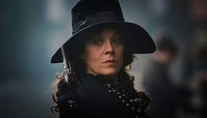
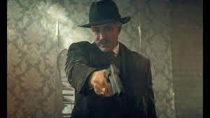
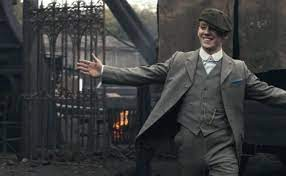
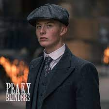
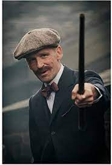
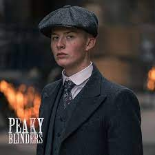
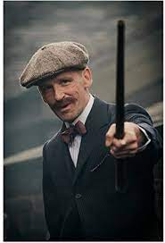
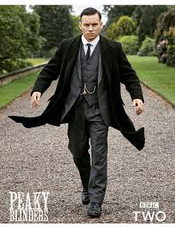
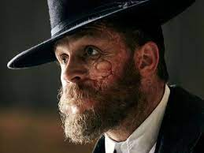
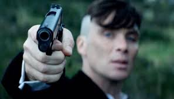

Todo acerca de The Peaky Blinders
Peaky Blinders es la mayor mafia inglesa de principios del siglo XX
Es la representación de todo lo que hacía esta banda, la relevancia e influencia que tuvo en el Reino Unido y como era el ambiente en el que vivían
Aunque usted no lo crea, esta mafia si existió y en realidad la serie no son más que hechos históricos llevados a la televisión



 





